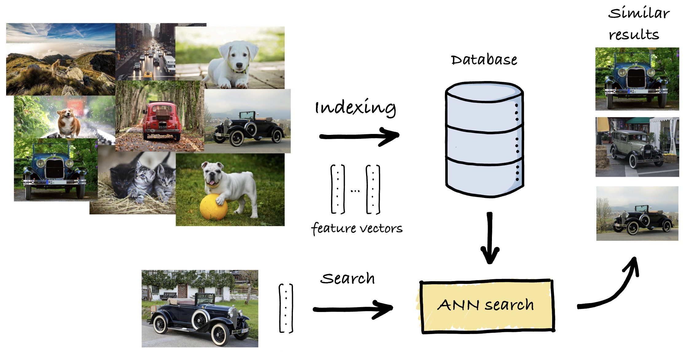

Introduction
Scalable Vector Search
Scalable Vector Search (SVS) is a performance library for vector similarity search. Thanks to the use of Locally-adaptive Vector Quantization [ABHT23] and its highly optimized indexing and search algorithms, SVS provides vector similarity search:
on billions of high-dimensional vectors,
at high accuracy
and state-of-the-art speed,
while enabling the use of less memory than its alternatives.
This enables application and framework developers using similarity search to unleash its performance on Intel ® Xeon CPUs (2nd generation and newer).
SVS offers a fully-featured and yet simple Python API, compatible with most standard libraries. SVS is written in C++ to facilitate its integration into performance-critical applications.
Note
The open-source SVS library supports all functionalities and features described in this documentation, except for our proprietary vector compression techniques, specifically LVQ [ABHT23] and Leanvec [TBAH24]. These techniques are closed-source and supported exclusively on Intel hardware. We provide shared library and PyPI package to enable these vector compression techniques in C++ and Python, respectively.
Performance
SVS provides state-of-the-art performance and accuracy [ABHT23] for billion-scale similarity search on standard benchmarks.
For example, for the standard billion-scale Deep-1B dataset, different configurations of SVS yield significantly increased performance (measured in queries per second, QPS) with a smaller memory footprint (horizontal axis) than the alternatives [1]:

SVS is primarily optimized for large-scale similarity search but it still offers state-of-the-art performance at million-scale.
Key Features
SVS supports:
Similarity functions: Euclidean distance, inner product, cosine similarity (see Distance functions for an updated list).
Vectors with individual values encoded as: float32, float16, uint8, int8 (see Data types for an updated list).
Vector compression (including Locally-adaptive Vector Quantization [ABHT23])
Optimizations for Intel ® Xeon ® processors:
2nd generation (Cascade Lake)
3rd generation (Ice Lake)
4th generation (Sapphire Rapids)
See Roadmap for upcoming features.
News
Stay tuned for new features!
What SVS is not
SVS does not provide
support to generate vector embeddings,
support for vector post-processing,
ACID properties to guarantee data validity regardless off errors, power failures, etc.
SVS Documentation
This documentation is organized in three main sections:
a high-level description of the library, including tutorials to get-started, use advanced features and tune search performance,
a detailed description of the Python API,
a detailed description of the C++ implementation.
What is Similarity Search?
{kind=link}
Given a database of high-dimensional feature vectors and a query vector of the same dimension, the objective of similarity search is to retrieve the database vectors that are most similar to the query, based on some similarity function. In modern applications, these vectors represent the content of data (images, sounds, text, etc.), extracted and summarized using deep learning systems such that similar vectors correspond to items that are semantically related.
To be useful in practice, a similarity search solution needs to provide value across different dimensions:
Accuracy: The search results need to be of good quality to be actionable, that is, the retrieved items need to be similar to the query.
Performance: The search needs to be fast, often meeting stringent quality-of-service constraints.
Scaling: Databases are quickly becoming larger and larger, both in terms of the number of items they contain and in terms of the dimensionality of said items.
Cost: Being deployed in production and datacenter scenarios, the solution needs to minimize the TCO, often measured as a combination of capital expenditures and operating expenses.
A natural solution is to linearly scan over each vector in the database, compare it with the query, rank the results in decreasing order of similarity, and return the most similar ones. However, the sheer volume and richness of data preclude this approach and make large-scale similarity search an extremely challenging problem that is both compute and memory-intensive. To achieve acceleration, dedicated solutions are needed, which commonly involve two phases:
During indexing, each element in the database is converted into a high-dimensional vector. Then, an advanced data structure, called an index, is set up such that the search can be carried out as efficiently as possible by effectively accessing only a small fraction of the database.
At search time, given a query vector, an algorithm sifts through the database using the index. Its results are used to take different informed actions, depending on the final application, based on these semantically relevant results.
Footnotes